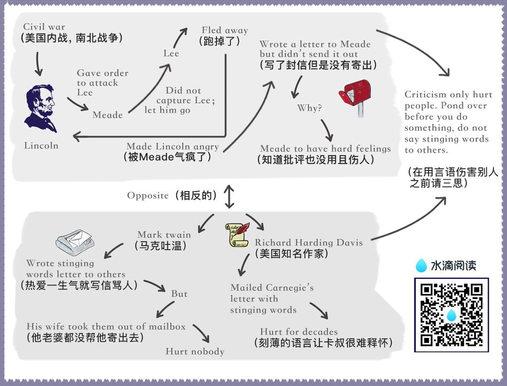

chapter1.3
Time after time, during the Civil War, Lincoln put a new general at the head of the Army of the Potomac, and each one in turn—McClellan, Pope, Burnside, Hooker, Meade—blundered tragically and drove Lincoln to pacing the floor in despair.

Half the nation savagely condemned these incompetent generals, but Lincoln, "with malice toward none, with charity for all," held his peace.
One of his favorite quotations was "Judge not, that ye be not judged."
And when Mrs. Lincoln and others spoke harshly of the southern people, Lincoln replied: "Don't criticize them; they are just what we would be under similar circumstances."
If any man ever had occasion to criticize, surely it was Lincoln.
Let's take just one illustration: The Battle of Gettysburg was fought during the first three days of July 1863.
During the night of July 4, Lee began to retreat southward while storm clouds deluged the country with rain.
When Lee reached the Potomac with his defeated army, he found a swollen,impassable river in front of him, and a victorious Union Army behind him.
Lee was in a trap. He couldn't escape. Lincoln saw that.
Here was a golden, heaven-sent opportunity—the opportunity to capture Lee's army and end the war immediately.
So, with a surge of high hope, Lincoln ordered Meade not to call a council of war but to attack Lee immediately.
Lincoln telegraphed his orders and then sent a special messenger to Meade demanding immediate action.
And what did General Meade do?
He did the very opposite of what he was told to do.
He called a council of war in direct violation of Lincoln's orders.
He hesitated. He procrastinated. He telegraphed all manner of excuses. He refused point-blank to attack Lee.
Finally the waters receded and Lee escaped over the Potomac with his forces.
Lincoln was furious, "What does this mean?"
Lincoln cried to his son Robert.
"Great God! What does this mean?
We had them within our grasp, and had only to stretch forth our hands and they were ours; yet nothing that I could say or do could make the army move.
Under the circumstances, almost any general could have defeated Lee.
If I had gone up there, I could have whipped him myself."
In bitter disappointment, Lincoln sat down and wrote Meade this letter.
And remember, at this period of his life Lincoln was extremely conservative and restrained in his phraseology.
So this letter coming from Lincoln in1863 was tantamount to the severest rebuke.
My dear General, I do not believe you appreciate the magnitude of the misfortune involved in Lee's escape.
He was within our easy grasp, and to have closed upon him would, in connection with our other late successes, have ended the war.
As it is, the war will be prolonged indefinitely.
If you could not safely attack Lee last Monday, how can you possibly do so south of the river, when you can take with you very few—no more than two-thirds of the force you then had in hand?
It would be unreasonable to expect and I do not expect that you can now effect much.
Your golden opportunity is gone, and I am distressed immeasurably because of it.
What do you suppose Meade did when he read the letter?
Meade never saw that letter. Lincolnnever mailed it.
It was found among his papers after his death.
My guess is—and this is only a guess—that after writing that letter, Lincoln looked out of the window and said to himself, "Just a minute. Maybe I ought not to be so hasty.
It is easy enough for me to sit here in the quiet of the White House and order Meade to attack;but if I had been up at Gettysburg, and if I had seen as much blood as Meade has seen during the last week, and if my ears had been pierced with the screams and shrieks of the wounded and dying, maybe I wouldn't be so anxious to attack either.
If I had Meade's timid temperament,perhaps I would have done just what he had done.
Anyhow, it is water under the bridgenow.
If I send this letter, it will relieve my feelings, but it will make Meade try to justify himself.
It will make him condemn me.
It will arouse hard feelings, impair all his further usefulness as a commander, and perhaps force him to resign from the army."
So, as I have already said, Lincoln put the letter aside, for he had learned by bitter experience that sharp criticisms and rebukes almost invariably end in futility.
Theodore Roosevelt said that when he, as President, was confronted with a perplexing problem, he used to lean back and look up at a large painting of Lincoln which hung above his desk in the White House and ask himself,
"What would Lincoln do if he were in my shoes? How would he solve this problem?"
The next time we are tempted to admonish somebody, let's pull a five-dollar bill out of our pocket, look at Lincoln's picture on the bill, and ask.
"How would Lincoln handle this problem if he had it?"
Mark Twain lost his temper occasionally and wrote letters that turned the Paper brown.
For example, he once wrote to a man who had aroused his ire: "The thing for you is a burial permit. You have only to speak and I will see that you get it."
On another occasion he wrote to an editor about a proof reader's attempts to "improve my spelling and punctuation."
He ordered: "Set the matter according to my copy hereafter and see that the proofreader retains his suggestions in the mush of his decayed brain."
The writing of these stinging letters made Mark Twain feel better.
They allowed him to blow off steam,and the letters didn't do any real harm, because Mark's wife secretly lifted them out of the mail.
They were never sent.
Do you know someone you would like to change and regulate and improve?
Good! That is fine. I am all in favor of it, but why not begin on yourself?
From a purely selfish standpoint, that is a lot more profitable than trying to improve others—yes, and a lot less dangerous.
"Don't complain about the snow on your neighbor's roof," said Confucius, "When your own doorstep is unclean."
When I was still young and trying hard to impress people, I wrote a foolish letter to Richard Harding Davis, an author who once loomed large on the literary horizon of America.
I was preparing a magazine article about authors, and I asked Davis to tell me about his method of work.
A few weeks earlier, I had received a letter from someone with this notation at the bottom: "Dictated but not read."
I was quite impressed. I felt that the writer must be very big and busy and important.
I wasn't the slightest bit busy, but I was eager to make an impression on Richard Harding Davis, so I ended my short note with the words: "Dictated but not read."
He never troubled to answer the letter.
He simply returned it to me with this scribbled across the bottom: "Your bad manners are exceeded only by your bad manners."
True, I had blundered, and perhaps I deserved this rebuke.
But, being human, I resented it.
I resented it so sharply that when I read of the death of Richard Harding Davis ten years later, the one thought that still persisted in my mind—I am ashamed to admit—was the hurt he had given me.
If you and I want to stir up a resentment tomorrow that may rankle across the decades and endure until death, just let us indulge in a little stinging criticism—no matter how certain we are that it is justified.
When dealing with people, let us remember we are not dealing with creatures of logic.
We are dealing with creatures of emotion, creatures bristling with prejudices and motivated by pride and vanity.